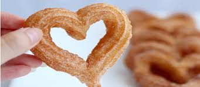

| Period | Classes |
|---|---|
| 1 | APUSH- Pratt |
| 2 | AP Physics- Brunner |
| 3 | AP Comp Sci Prns- Nguyen |
| 4 | Alg2/Trig- Conlay |
| 5 | APLANG- Rose |
| 6 | XC- Conlay |
What's up everyone!! As you can see, I'm Katelyn and this year I'm a junior. Computer science to me is extremely interesting and is something I would love to do in the future. I aspire to inspire others and feel comfortable doing so in my sport. I also enjoy eating snacks and small meals throughout the day instead of comsuming the basic three meal courses. Not to mention, I never skip breakfast. All in all, I don't bite and I would love to meet new people!! HMU <3
Do not take life too seriously. You will never get out of it alive. Elbert Hubbard
